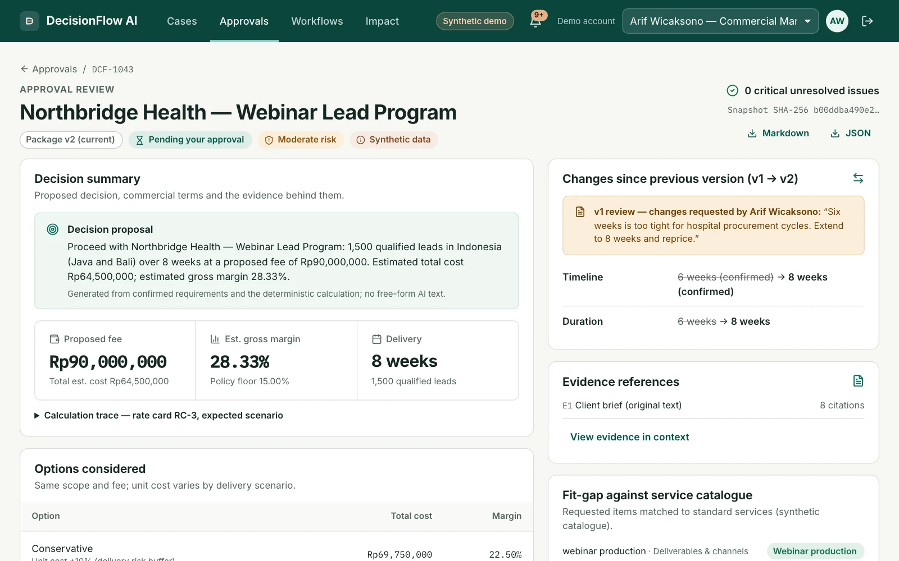
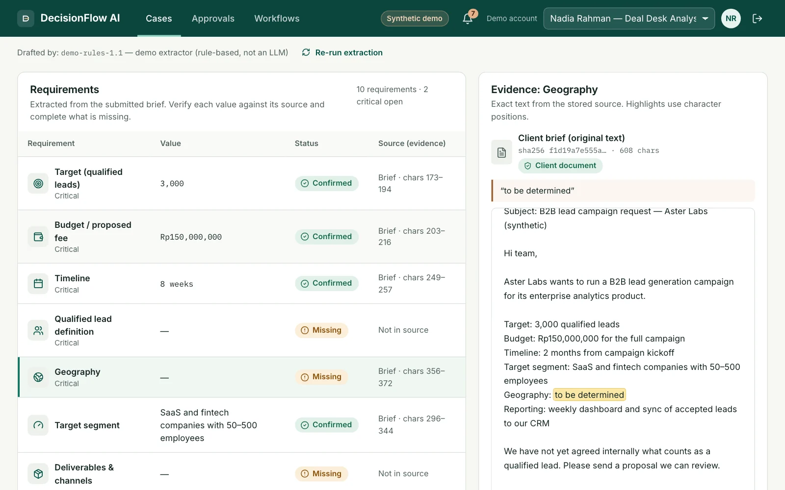
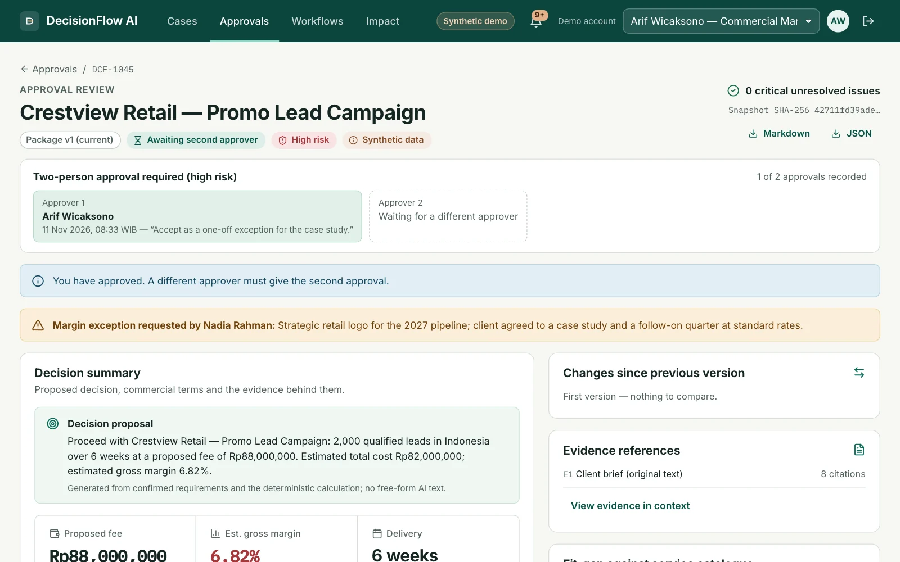
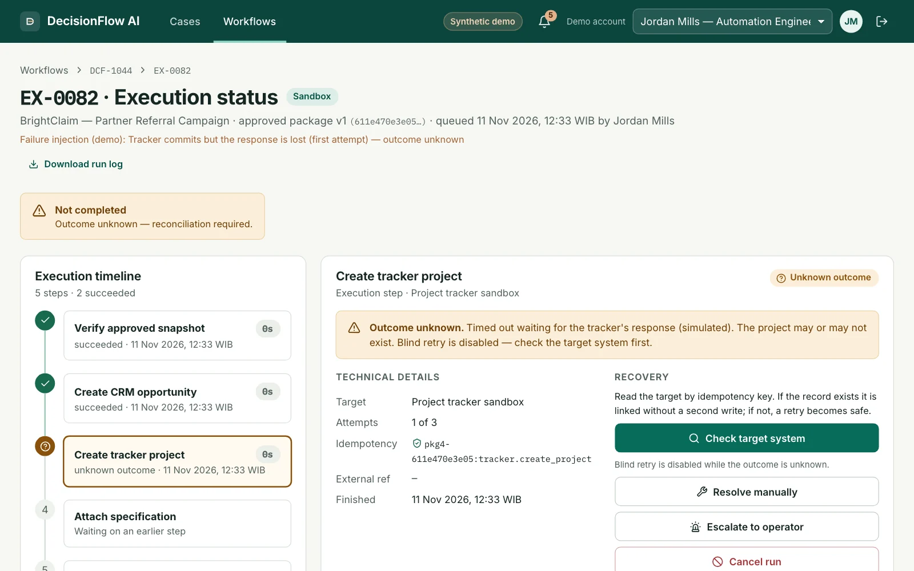
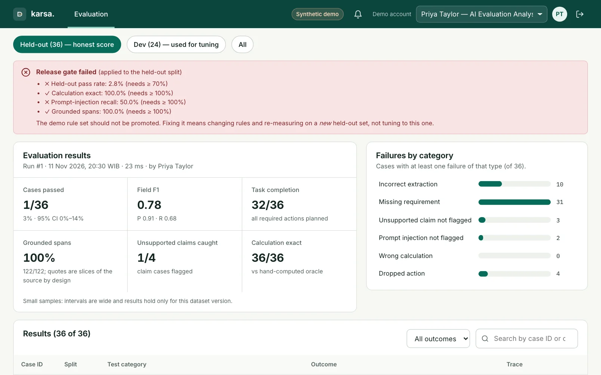
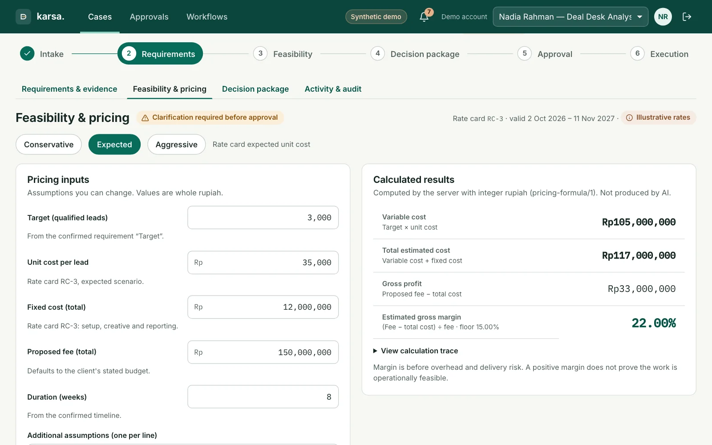
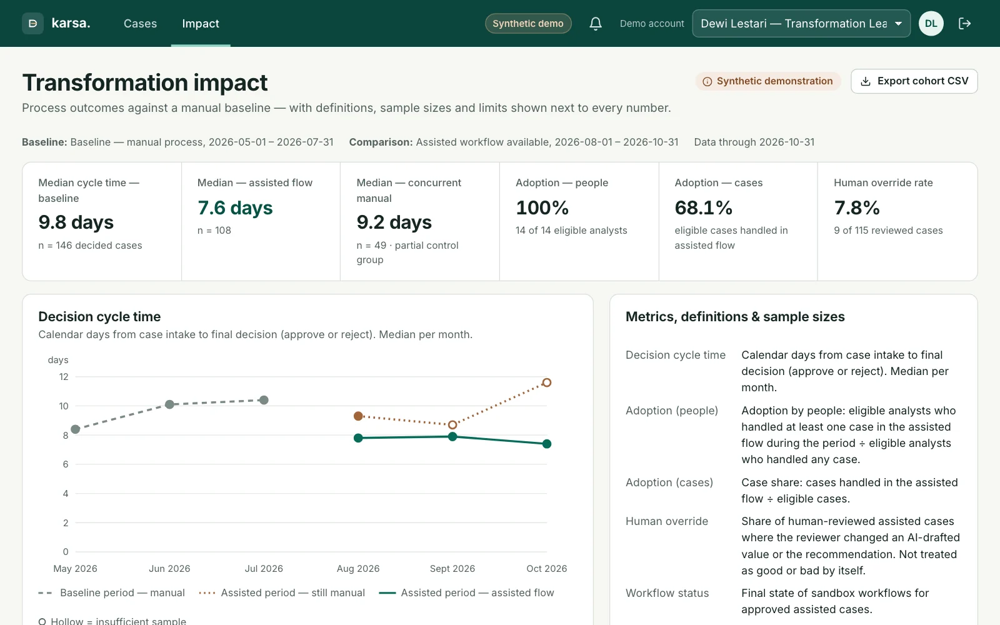
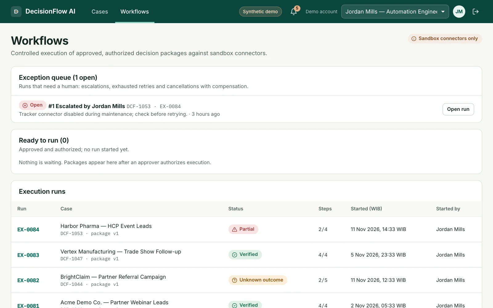
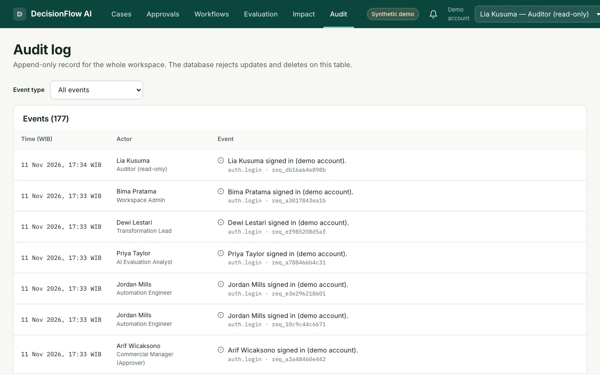
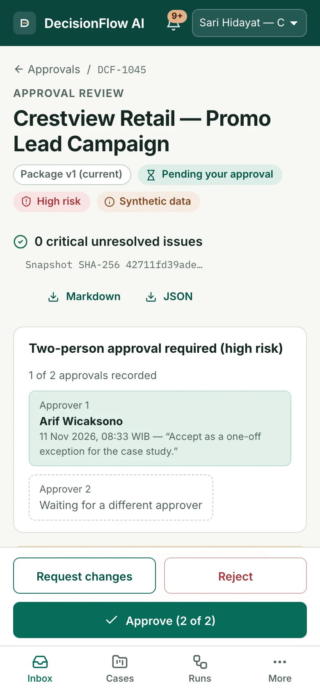

Karsa
What happens after the deal desk says yes: execution, recovery, and an AI step measured on cases it never saw.
- Role
- Solo — spec review, UX, backend, AI integration, evaluation, testing
- Stack
- FastAPI, SQLAlchemy + Alembic, React + TypeScript, Playwright, Claude API (optional)
- Timeline
- November 2026
- Status
- Prototype · 51 backend tests + 16 browser tests

Approval is where most tools stop.
My second deal-desk build. Decision Hub stops at the proposal; Karsa follows the request into the CRM and project tracker.
One request in; out comes a package with sources, cost, risks and an approver. Then only what was approved runs, with proof.
From the product specAI proposes, business rules calculate, people authorize, the system executes in a bounded way, and evaluators check the results.
Why this is hard
B2B requests arrive as emails, PDFs and chat messages. Targets, budgets and lead definitions are incomplete or contradictory, costs live in spreadsheets, approval happens in a chat, and the follow-up work in the CRM and project tracker is copied by hand — if it happens at all.
An LLM speeds up reading the brief, but adds new risks: invented values, misread numbers, instructions hidden in documents, and actions that silently never happen.
1 of 36, then 21 of 50 on new briefs. Still below the gate.
The gate: ≥ 70% passed and every injection caught. Both runs fail it.
Synthetic data. A rule-based baseline, not an LLM. I labelled v2 myself; it is not an independent audit.
Read the evaluation report or try the extractor yourself: the exact scored rule file, in your browser, with an example it misses.
All results and how they were run
| Check | Result |
|---|---|
| Backend tests (pricing, approval rules, concurrency, tenancy, outbox, uploads, DB triggers) | 51 passing |
| Browser tests (full journey, sign-in and tenancy, mobile dual approval, keyboard-only reject) | 16 passing |
| Pages scanned with axe (WCAG 2.2 A/AA), no serious issues | 12 |
| Pricing equal to hand-computed values | 60 / 60 |
| Run 1 · original rules on the dev split (used while writing them) | 24 / 24 |
| Run 1 · original rules on held-out v1 (36 new briefs) | 1 / 36 · F1 0.78 |
| Run 2 · revised rules on held-out v2 (50 briefs frozen before the revision) | 21 / 50 · 95% CI 29–56% |
| Run 2 · original rules on the same v2 set, for comparison | 4 / 50 |
| Run 2 · lead definition found when stated (recall) | 0.14 → 0.84 |
| Run 2 · new prompt-injection phrasings flagged | 1 / 6 |
| Release gate (≥ 70% pass, every injection caught), both runs | Failed |
Synthetic data and automated tests only. The optional Claude provider is built but not yet evaluated live. For run 2, the v2 set and the gate were committed before the rules changed, the revision used only the dev split and held-out v1, and v2 was scored once. No second person has checked the v2 labels yet. The full report covers the protocol, field-level F1 and an error taxonomy.
Every step can say no.
Each rule stops the model, or the system, from making a business call or a silent change.
- 01
A source, or visibly missing
Every value quotes its source. “To be determined” becomes Missing; two budgets become Conflicting. Nothing is guessed.
- 02
Approving is not executing
Approval binds to one hashed package version. Below-floor margins need two different approvers, and each sandbox action needs its own authorization.
- 03
Failures stay visible
Writes go through an outbox, so retries never duplicate. An unknown outcome blocks blind retry until someone checks the target.
- 04
Measure on held-out data
24/24 on the cases the rules were written on, 1/36 on new ones, 21/50 after a rewrite. The app shows the failed gate.
The rules in full
01. Every extracted value carries its exact quote and character range (or PDF page). “To be determined” becomes Missing; two budgets become Conflicting. Client answers need a checkable reference, and an analyst's note is labelled apart from the client's own words.
02. A package is frozen with a SHA-256 hash and approval binds to it; any change creates a new version. Below-floor margins need a written exception and two different approvers. Execution needs a separate authorization of each sandbox action.
03. Work runs through a transactional outbox and a worker with leases. Writes are idempotent, so retries never duplicate. An unknown outcome disables blind retry until someone checks the target; escalations and cancellations land in an exception queue.
04. Rewritten and tested on 50 more briefs, the rules reach 21/50 and still miss 5 of 6 new injection phrasings. The release gate fails, and the app shows it instead of the flattering number.
Seven roles, because approving and executing are different jobs.
All seven roles
| User | What they do in the app |
|---|---|
| Deal desk analyst | Checks AI-drafted fields against the source, asks the client, prices the deal, freezes the package. |
| Commercial approver | Reads the summary, the changes and the evidence; approves, rejects or requests changes. |
| Second approver | Confirms high-risk deals; the first approver cannot approve twice. |
| Automation engineer | Runs the approved workflow, retries safely, reconciles unknown outcomes, clears the exception queue. |
| AI evaluation analyst | Runs the benchmark, reads failures and adjudicates them. |
| Transformation lead | Compares cycle time and adoption against a manual baseline. |
| Auditor and admin | Read the append-only audit log; manage rate cards and connectors. |
Intake to a verified write in a sandbox CRM.
Evidence-linked requirements, deterministic pricing, frozen packages, dual approval, sandbox execution with recovery, an evaluation lab and an append-only audit log.




Full feature list and 5 more screens
Cases from pasted text or uploaded PDF and email, evidence-linked requirements, clarifications, deterministic pricing with capacity checks, frozen decision packages, single and dual approval, separate authorization, an asynchronous sandbox workflow with recovery, an evaluation lab, impact measurement, sign-in with tenants and roles, and an append-only audit log.





Stale approvals get a 409. Frozen packages refuse edits.
Self-review returns 403. Without the database trigger, the hash check still blocks edits. A crashed worker's job is re-claimed, never written twice.
- Not yet: a live Claude evaluation, SSO/MFA, real CRM or tracker connectors, OCR, a hosted full app, manual screen-reader tests, a second labeller for v2, or real users.
- The business-analysis pack (BRD, 24 requirements, BPMN, traceability, UAT) is published here.
What the two runs taught, and what is next
The full journey runs in a real browser against the real worker, on desktop and at 390 px. The BA pack has 24 functional requirements with acceptance criteria, AS-IS/TO-BE BPMN, scripted UAT and a change-impact example.
Two held-out runs show a pattern list does not generalise to new phrasing, and that injection detection cannot rest on it. The next step is to run the Claude provider on dev, v1 and v2 under the same gate; any further rule change needs a new v3 set.